What this page covers
A small variable-stiffness gripper with measured holding force.
This page covers the bistable SMP gripper design: the heater and SMP palm, the pre-stretched Ecoflex layer, the motorized reset mount, and the force tests used to characterize grasping and holding.
- Mechanism: soft grasping above glass transition, passive snap closure, and rigid holding after cooling.
- Build: SMP palm, flexible heater, Ecoflex bias layer, elastic rings, and string-driven reset mount.
- Testing: trigger force, temperature-dependent gripping and holding curves, 3.93 N maximum holding force, and hardware demonstrations.
Mechanism and fabrication
Soft when grasping, rigid when holding.
The mechanism is a hybrid of soft and rigid grasping. Above glass transition, the SMP palm and fingers become compliant enough to conform and snap between open and closed states. Below glass transition, the same shape freezes into a high-stiffness holder that needs no continuous power.
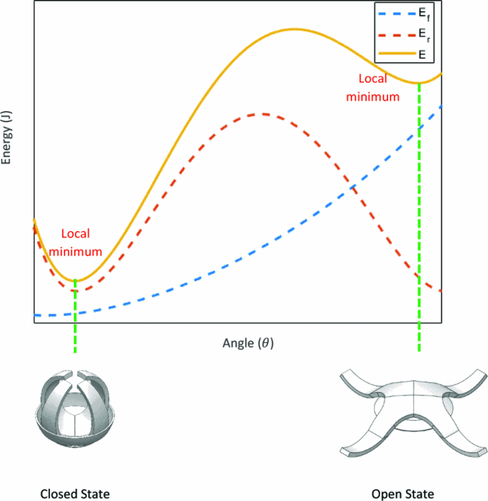
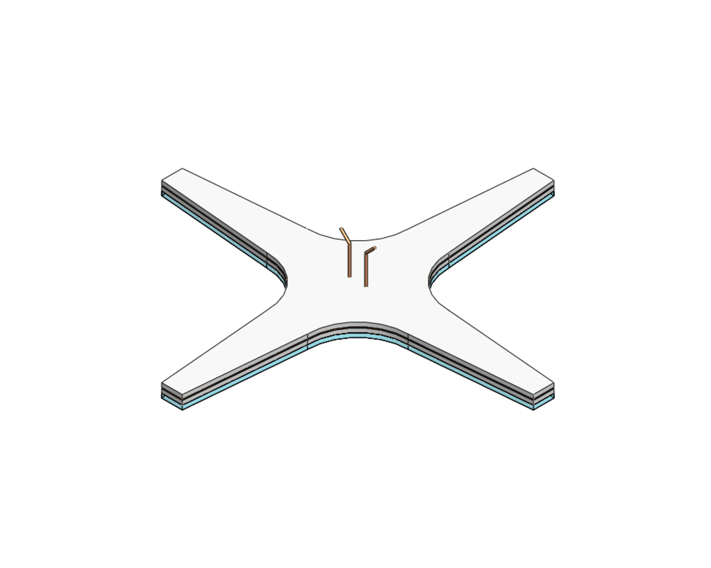
SMP chemistry
Jeffamine D400 and Epon 828 were mixed at 37.9/62.1 wt% and cured around the heater to form the shape-memory base.
Heater design
Laser-patterned Pyralux AP353500E was acid-etched to about 2.0 ohms, balancing heating power and reliability at roughly 2 A.
Finger geometry
Each finger is about 45 mm from the palm center with 5 mm-wide tips, giving enough length for conformal wrap without losing snap-through behavior.
Ring tuning
Two Ecoflex 30 rings, based on an 8 mm-wide, 60 mm-perimeter ring, set the open/closed energy minima and the gripping force.
Motor-driven reset mount
The holder makes a passive gripper usable on a test stand or robot.
The gripper closes passively when it is soft and contact force pushes the palm through the bistable transition. Reopening uses a motor, spool, piston, cap, base frame, and four nylon strings to pull the softened fingers back to the open state without asking the SMP shape-memory force to do all the work.
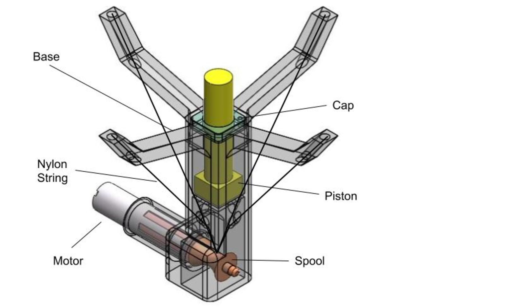
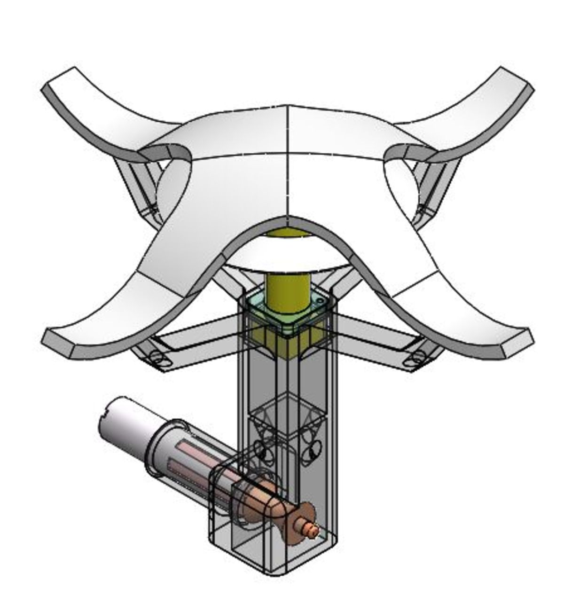
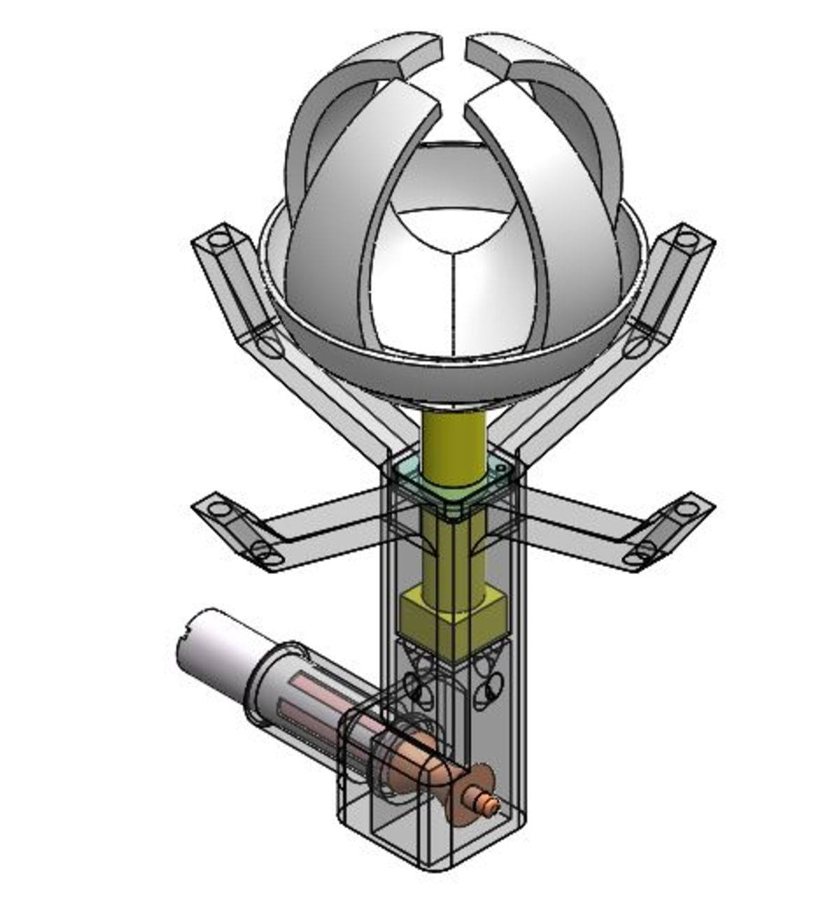
Five-part mount
The frame, piston, cap, spool, and motor hold the gripper while still allowing the palm to translate during snap-through.
String routing
Four nylon strings pass through the fingers about 1 cm from the tips, are secured with washers on the pre-stretched Ecoflex side, then route through finger and base holes to the spool.
Design constraint
The string holes had to avoid breaking the embedded copper heater, so the mount is part of the electromechanical design rather than a cosmetic holder.
Temperature-dependent force testing
Force tests show the gripper as a measured mechanism, not just a prototype photo. Holding force was tested from 70 to 35 deg C with a 25 mm sphere; gripping force was tested against a vertical cylinder from 70 to 40 deg C. The transition around 40-50 deg C separates the soft grasping regime from the rigid holding regime.
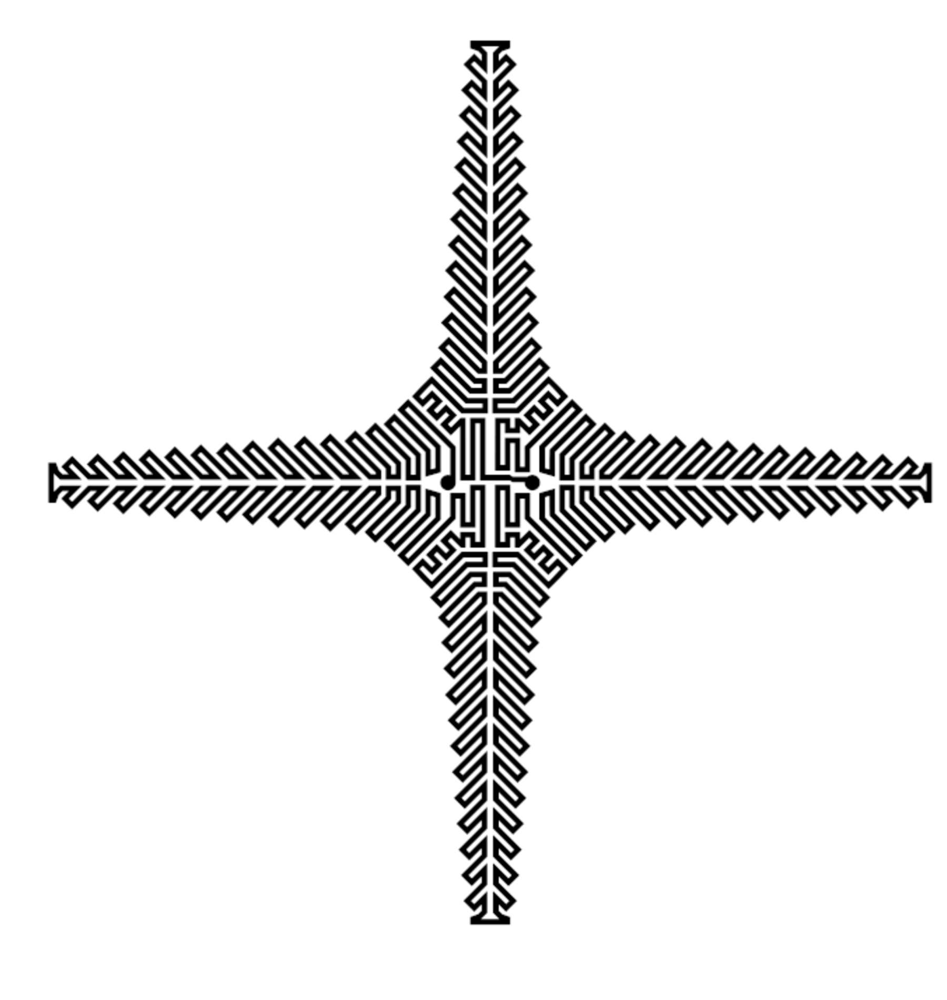
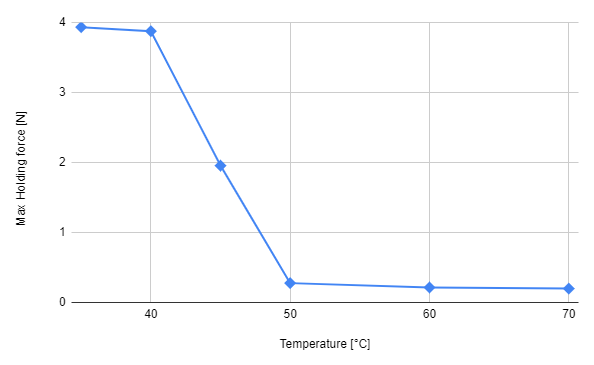
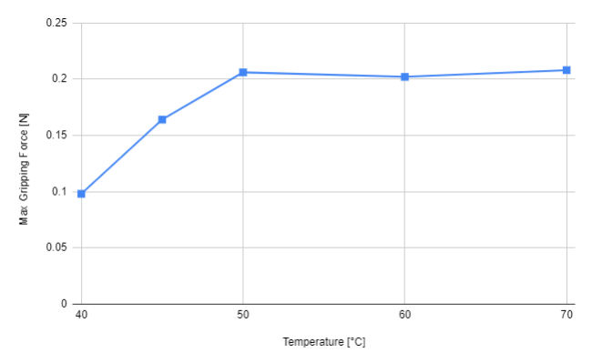
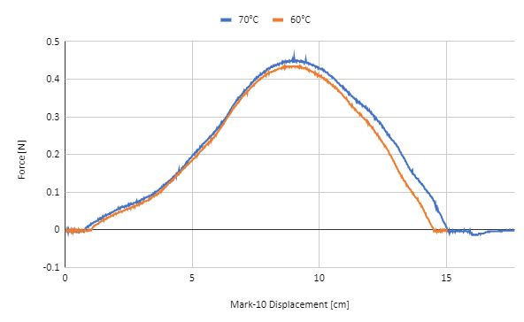
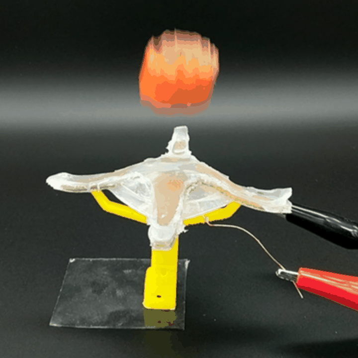
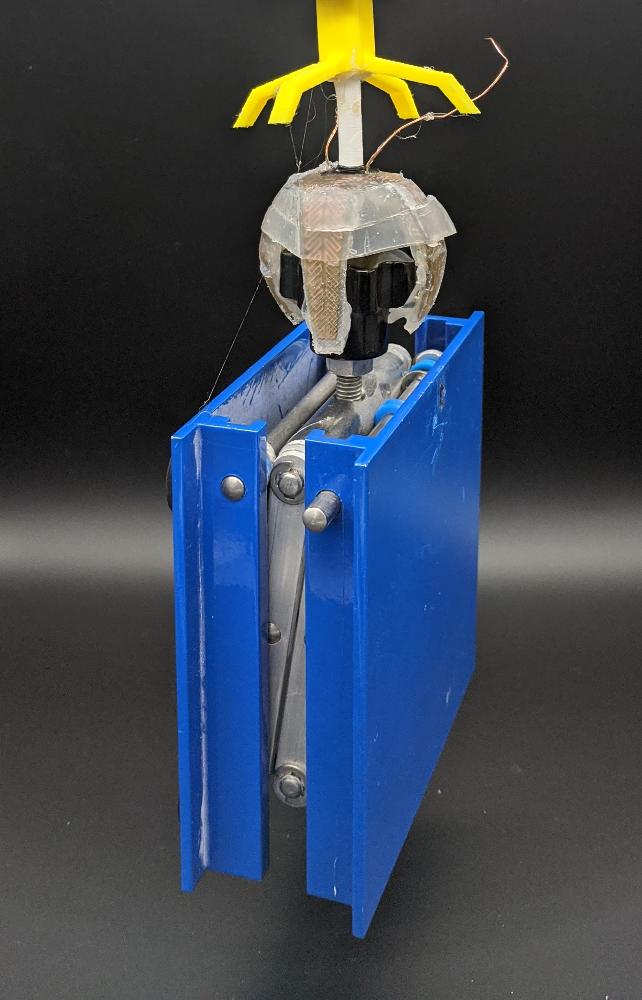

What this demonstrates
The mechanism is testable and understandable: embedded heater integration, tuned elastic energy minima, passive bistable triggering, and force-based validation.
The same design theme appears in later hand work: compliance and variable stiffness are used to change contact behavior, then paired with controlled actuation and measured tests.